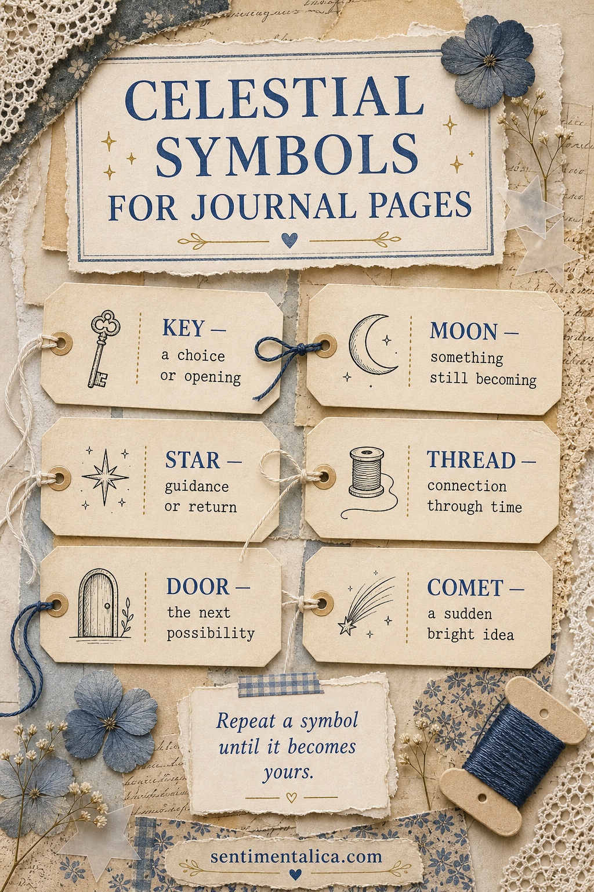
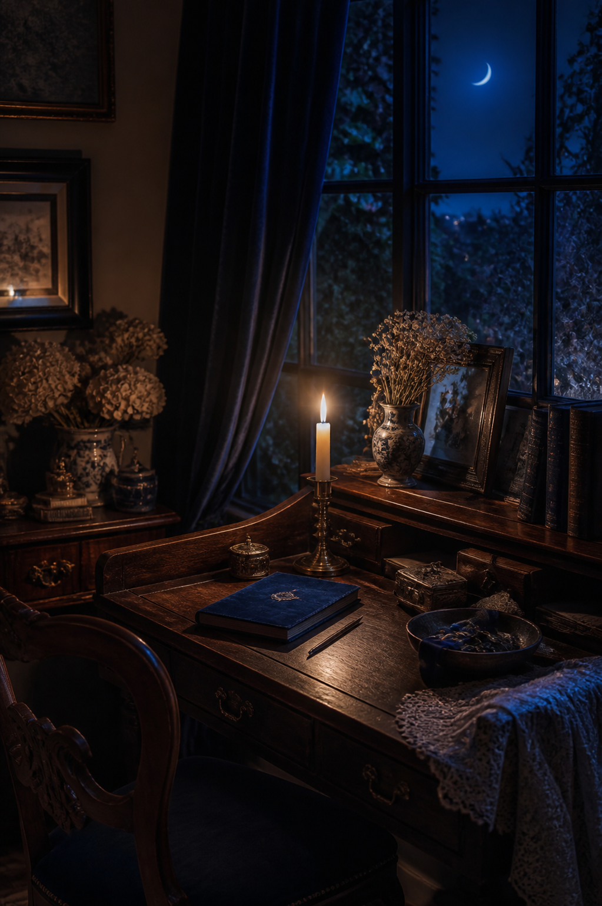

A repeated symbol can hold more feeling than a long title. A moon beside an unfinished thought, a key near a difficult decision, or a tiny star beside something worth returning to gives a journal its own quiet language.

Give each symbol one clear job
Begin with three symbols rather than twelve. Assign each a meaning you will actually need: a moon for something still becoming, a star for guidance, and a key for a choice or opening. The meaning does not have to be ancient or universal. It only has to remain consistent enough that you recognize it later.
Draw them simply
Your symbols should be easy to make with an ordinary pen. A crescent can be two curved lines. A star can be four long points. A door can be a narrow arch with one dot. Their usefulness comes from repetition, not perfect illustration. Try each mark several times on scrap paper and keep the version your hand remembers.
Use placement as part of the meaning
A star in the margin can mark a sentence to revisit. Thread drawn between two photographs can connect moments from different days. A small door at the end of an entry can suggest that the story is not finished. Let the symbol do structural work rather than floating on the page as decoration.

Change the material, keep the shape
Repeat one symbol in different forms. Draw a moon in ink, cut another from vellum, and stitch a third with silver thread. The varied material keeps the pages from feeling stamped or themed, while the familiar outline holds the journal together.
Build a small legend
Reserve the last page of your journal for a symbol key. Add each mark only after you have used it a few times. You may discover that a comet means a sudden idea, a flower means quiet growth, or a door means permission rather than possibility. Let the legend follow your practice instead of controlling it.
Keep mystery without losing readability
Symbols work best beside clear dates and ordinary sentences. They do not need to hide everything. Use them to mark emotional patterns, recurring places, or thoughts that are still too delicate to name fully. When you return months later, the words give context and the mark brings back the atmosphere.
A simple first page
- Write today's date in the corner.
- Choose one moment that feels unfinished.
- Add a crescent moon beside it.
- Write one possible next step.
- Place a tiny star beside the part you want to remember.
Choose a restrained celestial palette
Symbols remain readable when the palette stays quiet. Try midnight blue for ink, warm ivory for the page, mist grey for secondary marks, and antique gold for one point of emphasis. If you use rubber stamps or printed scraps, soften their edges with pencil or torn paper so they belong to the same hand-made language.
You can also assign color a meaning. Blue may mark reflection, gold a decision, and silver a memory. Keep the system small. When too many shapes and colors carry separate definitions, using the journal begins to feel like decoding a chart instead of noticing your life.
Over time, the symbols become familiar because they have accompanied real thoughts. That is the most interesting kind of magic a journal can hold: meaning made slowly, by your own hand.
Find more Sentimentalica journal ideas for building a personal visual language.